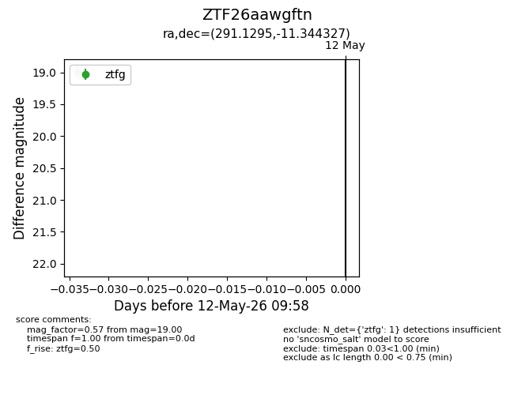
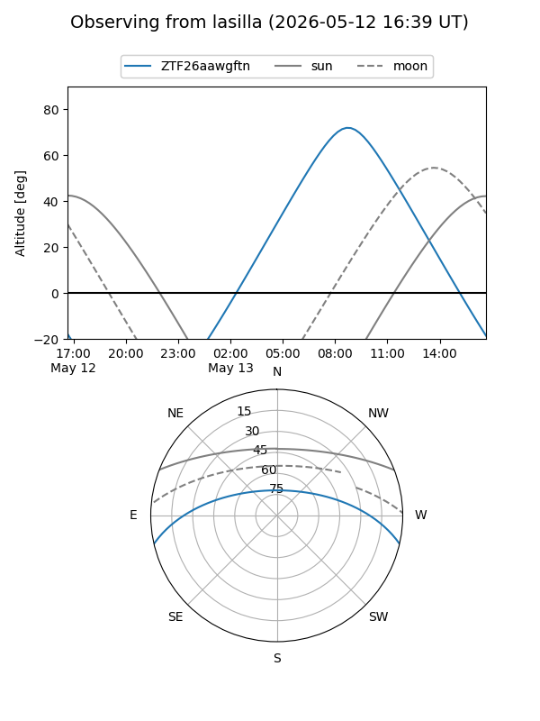
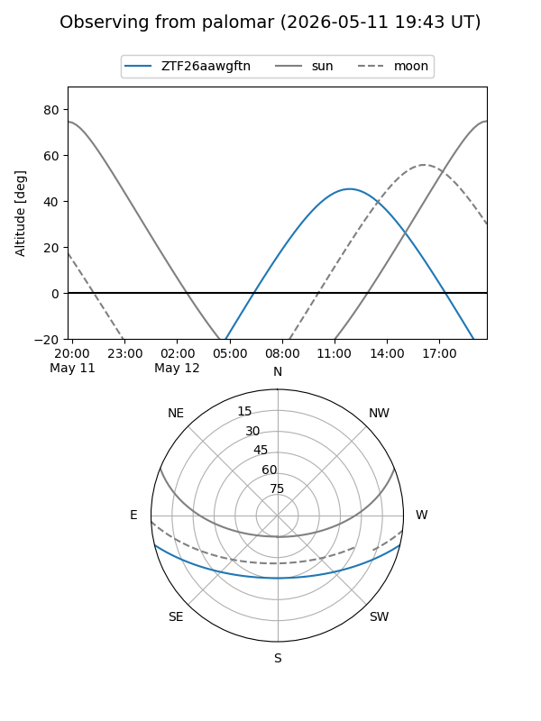

ZTF26aawgftn
Target ZTF26aawgftn at 2026-05-12 10:01
Aliases and brokers:
FINK: link
Lasair: link
ALeRCE: link
alt names
ZTF26aawgftn (ztf,fink_ztf)
Coordinates:
equatorial (ra, dec) = 291.1295,-11.34433
equatorial (HMS+DMS) = 19:24:31.07,-11:20:39.58
galactic (l, b) = (26.4196,-12.42767)
Flags:
Photometry:
last ztfg=19.00
1 ztfg detections
Lightcurve

Visibility


Additional plots